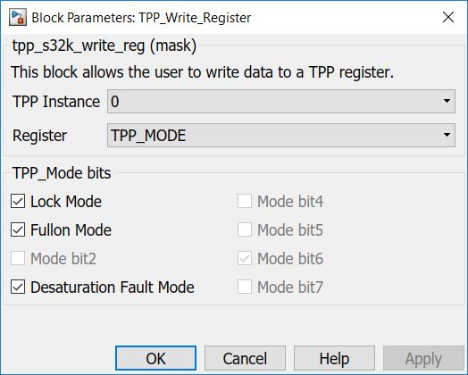

TPP Write Register Block
This block allows the user to write a TPP register at a time.
Block Image
Inputs:
- Data to be written in a specified register.
Outputs:
- None
Parameters and Dialog Box
The block has two parameter:
Instance
Selects the TPP instance to be used.
Note:Currently limited to only 1 instace (#0).
Register
Available register who can be writen on TPP integrated circuit.
Note: TPP register who can be writen are:
- TPP_MASK0: used to enable interrupt for following events: overtemperature, desaturation, VLS, overcurrent error.
- TPP_MASK0: used to enable interrupt for following events: phase error, framing error, write error, reset.
- TPP_MODE: used to enable following modes for TPP: lock, fullon and desaturation.
- TPP_CLINT0: used to clear interrupt due following events: overtemperature, desaturation, VLS, overcurrent error.
- TPP_CLINT1: used to clear interrupt due following events: phase error, framing error, write error, reset.
If DESATURATION mode is disabled (the corresponding bit is cleared), then at a desaturation event, or if a phase error event is detected on any channel, all channels turn off and generates an Interrupt, if interrupts are enabled.
If DESATURATION mode is enabled (the corresponding bit is set), then at a desaturation event/phase error channel shutdown is disabled, but interrupts are still possible if unmasked.
If FULLON mode is enabled, then programmed deadtime control is disabled, making it is possible to have both high and Low-side drivers in a phase on simultaneously. This could be useful in special applications such as alternator regulators, or switched-reluctance motor drive applications. There is no deadtime control in fullon mode. Input signals directly control the output stages, synchronized with the internal clock
If LOCK mode is enabled, then this mode can only be cleared with a device reset. Since the mode lock mode can only be set, this bit prevents any subsequent, and likely erroneous, mode, deadtime, or mask register changes from being received. If an attempt is made to write to a register when mode lock is enabled, a write error fault is generated.
Block Dependency
- Configure the TPP Configuration block.
- Configure the LPSPI Configuration block.
Block Miscellaneous Details
* Read Hardware Manual documentation to get more information (GD3000).